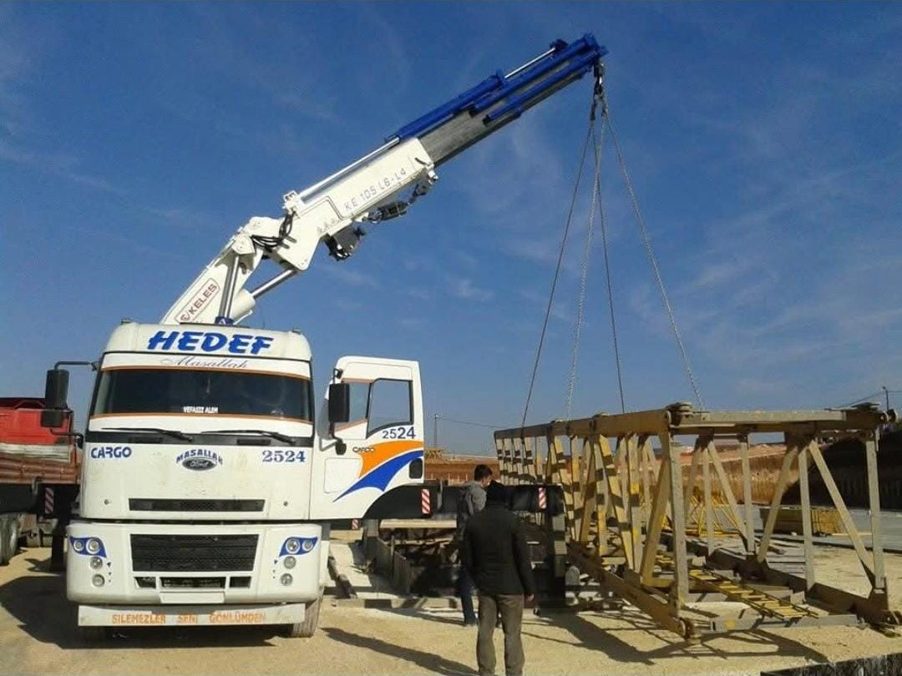
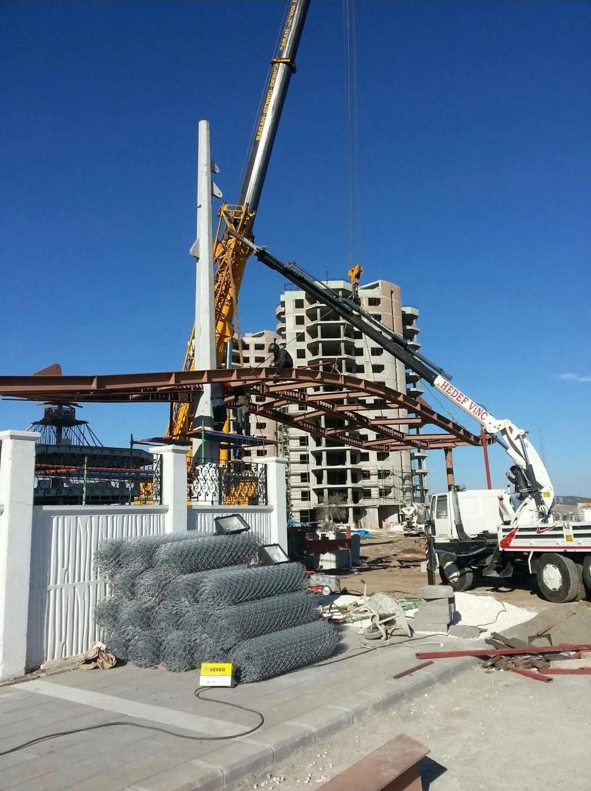
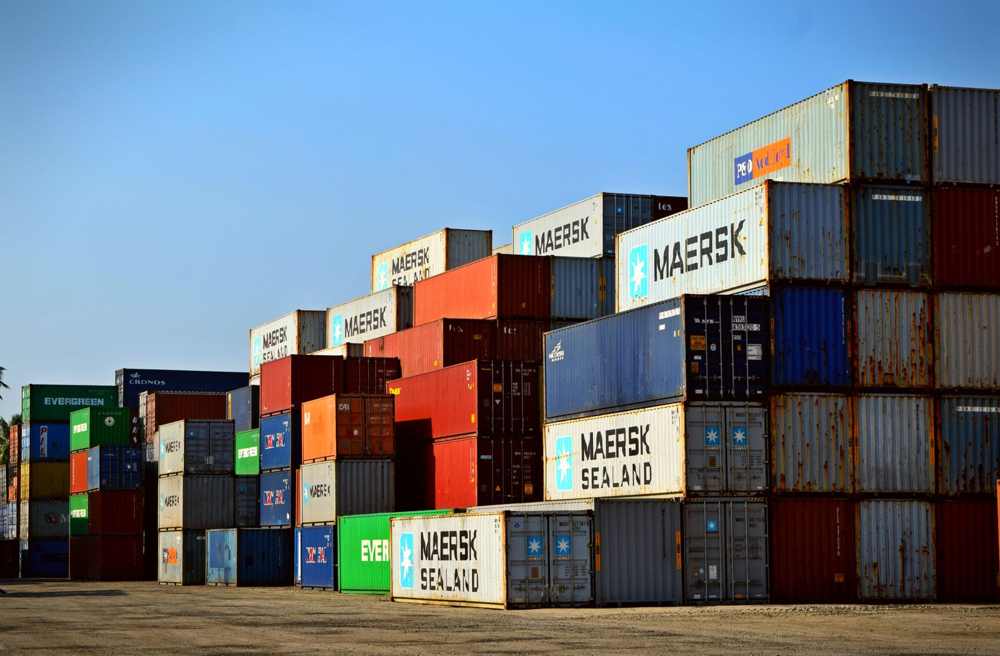
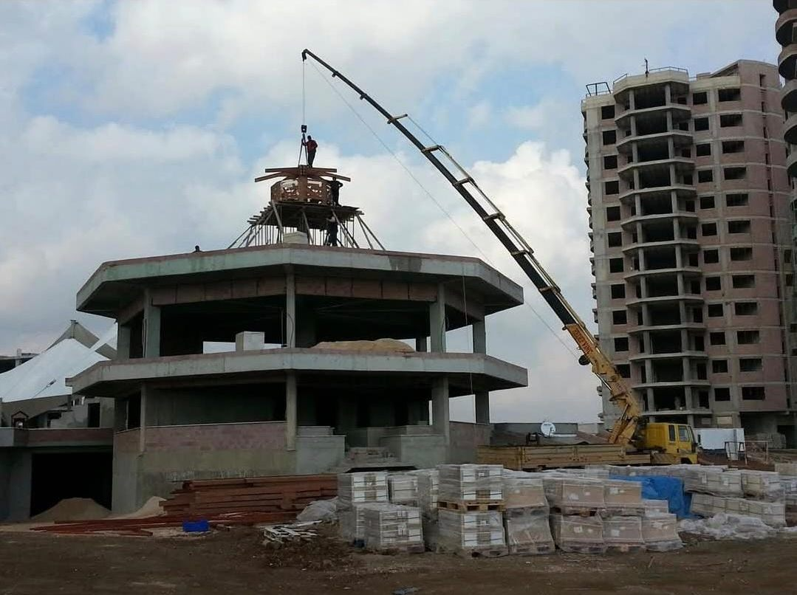
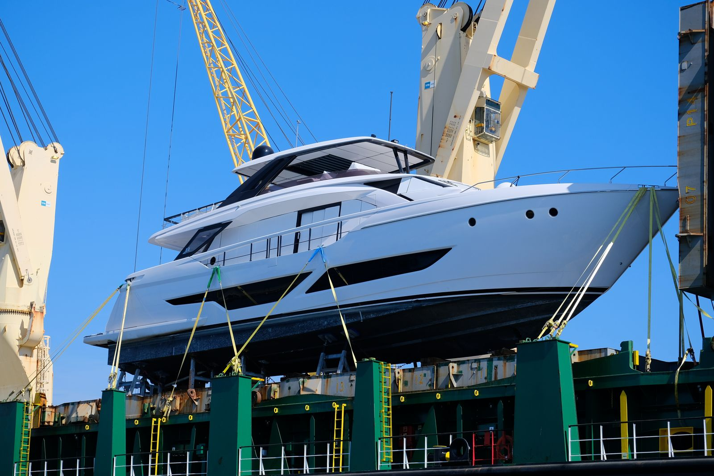

8 Ağu 2026
8 Ağu 2026
Vinç Kiralama Fiyatları Neye Göre Belirlenir?
Tonaj, bom mesafesi, çalışma süresi ve saha koşullarının kiralama fiyatını nasıl etkilediğini adım adım anlatıyoruz.
Yazıyı OkuSahadan pratik bilgiler: vinç kiralama, bakım, hidrolik ve iş güvenliği üzerine işin mutfağından yazılar — hepsi kendi tecrübemizden.
8 Ağu 2026
Tonaj, bom mesafesi, çalışma süresi ve saha koşullarının kiralama fiyatını nasıl etkilediğini adım adım anlatıyoruz.
Yazıyı Oku
16 Tem 2026Yükün ağırlığına, kaldırma yüksekliğine ve saha koşullarına göre mobil vinç mi hiyap mı sorusunun pratik cevabı.
Yazıyı Oku
24 Haz 2026Kaldırma planından sapan kontrolüne, vinçli çalışmalarda kazayı önleyen 10 temel saha kuralını sıralıyoruz.
Yazıyı Oku 5 Haz 2026
5 Haz 2026
Hidrolik hortum patlamalarının en sık nedenlerini ve düzenli kontrolle nasıl önlenebileceğini anlatıyoruz.
Yazıyı Oku 19 May 2026
19 May 2026
Ekskavatörden forklifte iş makinalarında günlük, haftalık ve çalışma saatine bağlı bakımların pratik özeti.
Yazıyı Oku
28 Nis 2026Sıfır ile 2. el konteyner arasında karar verirken sac, yalıtım ve tesisat tarafında kontrol etmeniz gereken noktalar.
Yazıyı Oku
9 Nis 2026Halat aşınmasından hidrolik kaçağına, vincinizin revizyona girmesi gerektiğini gösteren 7 belirtiyi anlatıyoruz.
Yazıyı Oku
14 Mar 2026Tekne çekme ve denize indirme işlerinin vinçle nasıl planlandığını ve sahada nelere dikkat edildiğini anlatıyoruz.
Yazıyı Okuİşinizi kısaca anlatın; hangi vinç gerektiğini söyleyelim, fiyatı netleştirelim, günü planlayalım.